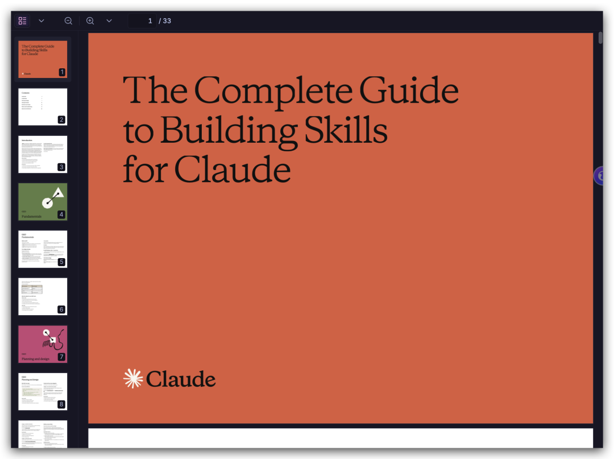

Anthropic刚刚官方发布了33页的Claude Skills构建指南，下面是全文中文译版，pls enjoy ~

目录
• 简介 • 第一章 基础知识 • 第二章 规划与设计 • 第三章 测试与迭代 • 第四章 发布与分享 • 第五章 模式与故障排查 • 第六章 资源与参考
简介
技能（Skill）其实就是一套指令——打包成一个简单的文件夹——用来教 Claude 怎么处理特定任务或工作流程。这是你自定义 Claude 最有力的方式之一。
你有没有遇到过这种情况：每次跟 Claude 对话，都要重新解释你的偏好、流程和专业背景？有了技能，你只需要教一次，以后每次都能直接用上。
什么时候用技能最合适？就是当你有可以重复执行的工作流程时，比如：
• 根据设计稿生成前端界面 • 用固定的方法论做研究调查 • 按照团队风格指南写文档 • 协调多个步骤的复杂流程
技能跟 Claude 的内置功能（比如执行代码、创建文档）搭配起来效果很好。如果你在做 MCP 集成，技能还能帮你把原始的工具访问能力，变成可靠、顺畅的工作流程。
读完这份指南，你会学到：
• 技能的技术要求和最佳实践 • 独立技能和 MCP 增强型工作流的设计模式 • 我们观察到的那些真正有效的做法 • 怎么测试、迭代、发布你的技能
这份指南适合谁读？
• 想让 Claude 按固定流程工作的开发者 • 想让 Claude 遵循自己习惯的高级用户 • 想在团队/组织内统一 Claude 使用方式的管理者
两条阅读路径：
只做独立技能？重点看"基础知识"和"规划与设计"部分。
想在 MCP 上叠加技能？"技能 + MCP"和第五章的设计模式更适合你。
两条路径用的是同样的技术规范，按自己的需求选就好。
预计投入： 读完这份指南后，配合 skill-creator 工具，通常 15-30 分钟就能做出你第一个能用的技能。
第一章：基础知识
技能到底是什么？
技能就是一个文件夹，里面放着：
SKILL.md | ||
scripts/ | ||
references/ | ||
assets/ |
三个核心设计理念
1. 渐进式披露（Progressive Disclosure）
技能用三层结构来组织内容：
• 第一层（YAML 前置信息）：每次都会加载到 Claude 的系统提示里。内容要精简——让 Claude 知道"这个技能是做什么的、什么时候该用它"就够了，不需要把所有东西都塞进来。 • 第二层（SKILL.md 正文）：当 Claude 觉得当前任务跟这个技能有关，才会加载完整指令。 • 第三层（链接文件）：放在技能文件夹里的其他文件，Claude 可以按需查阅。
这种分层设计的好处：既省 token，又能保留足够的专业深度。
2. 可组合性（Composability）
Claude 可以同时加载多个技能。你的技能要能跟其他技能和平共处，别假设自己是唯一被启用的那个。
3. 可移植性（Portability）
在 Claude.ai、Claude Code 和 API 里，技能的工作方式完全一样。写一次，到处能用——前提是运行环境支持技能所需的依赖。
面向 MCP 开发者：用技能增强 MCP
💡 只做独立技能、不涉及 MCP？可以直接跳到第二章，随时回来看这节。
如果你已经有了运行中的 MCP 服务器，最难的部分其实已经搞定了。技能就是在上面加一层"知识层"——把你已经知道的工作流程和最佳实践固化下来，让 Claude 能够一致地应用它们。
这两者怎么配合？
没有技能时，用户可能遇到的问题：
• 连上了 MCP，但不知道下一步该咋办 • 不断发来"怎么用你的集成做 X"的支持提问 • 每次对话从头开始，结果每次都不一样 • 用户会把问题归咎于你的 MCP 连接器，但根本原因其实是缺少工作流程指引
有了技能之后：
• 预置的工作流程在需要时自动激活 • 工具调用稳定可靠 • 最佳实践内嵌在每次交互里 • 新用户的学习成本大幅降低
第二章：规划与设计
第一步：从用例出发
在写任何代码之前，先想清楚你的技能要解决的 2-3 个具体场景。
一个好的用例定义长这样：
用例：项目冲刺规划
触发条件：用户说"帮我规划这个冲刺"或"创建冲刺任务"
步骤：
1. 通过 MCP 获取 Linear 的当前项目状态
2. 分析团队速度和容量
3. 建议任务优先级
4. 在 Linear 里创建带标签和估算的任务
结果：冲刺计划规划完毕，任务全部创建好问自己这几个问题：
• 用户想达成什么目标？ • 这需要哪些多步骤的工作流程？ • 需要哪些工具（Claude 内置的，还是 MCP 的）？ • 需要嵌入哪些领域知识或最佳实践？
三类常见用例
Anthropic 观察到三种最常见的技能使用场景：
第 1 类：文档和素材创建
适合场景：创建一致的高质量输出，比如文档、演示文稿、应用、设计、代码等。
真实案例：frontend-design 技能（另见 docx、pptx、xlsx 相关技能）
"创建有辨识度的、生产级别的前端界面，注重设计质量。
在构建 Web 组件、页面、作品、海报或应用时使用。"关键做法：
• 嵌入风格指南和品牌规范 • 用模板结构保证输出一致 • 最终确认前做质量清单检查 • 不需要外部工具——用 Claude 的内置能力就够
第 2 类：工作流程自动化
适合场景：多步骤流程，需要一致的执行方式，可能跨多个 MCP 服务器协调。
真实案例：skill-creator 技能
"创建新技能的交互式向导。
引导用户完成用例定义、前置信息生成、指令撰写和验证。"关键做法：
• 带验证节点的分步工作流 • 常见结构的模板 • 内置审查和改进建议 • 迭代优化循环
第 3 类：MCP 增强
适合场景：为 MCP 服务器的工具访问能力加上工作流程引导。
真实案例：来自 Sentry 的 sentry-code-review 技能
"利用 Sentry 错误监控数据，通过其 MCP 服务器
自动分析和修复 GitHub Pull Requests 中发现的 bug。"关键做法：
• 按顺序协调多个 MCP 调用 • 嵌入领域专业知识 • 提供用户本来需要手动指定的上下文 • 处理常见 MCP 问题
第二步：定义成功标准
怎么知道你的技能跑通了？
先说清楚：下面这些是参考目标，不是死板的门槛——测试时还是需要一定的感性判断。Anthropic 正在开发更完善的量化评估工具。
量化指标：
• 技能在 90% 的相关查询中触发 • 怎么测：跑 10-20 个应该触发技能的测试问题，记录自动加载的次数 • 工作流程在 X 次工具调用内完成 • 怎么测：有无技能各跑一次相同任务，对比工具调用次数和 token 消耗 • 每个工作流程 0 次 API 调用失败 • 怎么测：测试期间监控 MCP 服务器日志，追踪重试率和错误码
定性指标：
• 用户不需要提示 Claude 下一步该做什么 • 工作流程无需用户纠正就能跑完 • 跨会话结果保持一致
技术要求
文件夹结构
your-skill-name/
├── SKILL.md # 必须——主技能文件
├── scripts/ # 可选——可执行代码
│ ├── process_data.py
│ └── validate.sh
├── references/ # 可选——参考文档
│ ├── api-guide.md
│ └── examples/
└── assets/ # 可选——模板等资源
└── report-template.md几条必须遵守的规则
SKILL.md 命名：
• 必须精确写成 SKILL.md（区分大小写）• 任何变体都不行： SKILL.MD、skill.md都不能用
技能文件夹命名：
• ✅ 用 kebab-case（短横线连接小写）： notion-project-setup• ❌ 不能有空格： Notion Project Setup• ❌ 不能用下划线： notion_project_setup• ❌ 不能有大写： NotionProjectSetup
不要放 README.md：
• 技能文件夹内别放 README.md • 所有文档放在 SKILL.md 或 references/ 里 • 注意：通过 GitHub 发布时，仓库根目录仍然需要 README 供人类查阅——这和技能文件夹是两回事
YAML 前置信息：最关键的部分
YAML 前置信息是 Claude 决定要不要加载你的技能的依据，务必写对。
最简格式（够用了）：
---
name: your-skill-name
description: 它干什么。当用户说[具体短语]时使用。
---各字段说明
name（必填）：
• 只能用 kebab-case • 没有空格，没有大写 • 最好和文件夹名一致
description（必填）：
• 必须同时包含： • 这个技能能做什么 • 什么时候该用（触发条件） • 最多 1024 个字符 • 不能含 XML 标签（ <或>）• 要包含用户可能实际说出的话 • 如果涉及特定文件类型，要提到
license（可选）：
• 开源才需要填 • 常见选项：MIT、Apache-2.0
compatibility（可选）：
• 1-500 个字符 • 说明运行环境要求，比如：目标产品、需要的系统包、是否需要网络访问等
metadata（可选）：
• 任意键值对 • 推荐写上：author、version、mcp-server
---
name: skill-name
description: [必填描述]
license: MIT # 可选：开源协议，如 MIT 或 Apache-2.0
compatibility: Requires Claude.ai with internet # 可选：环境要求（1-500字符）
allowed-tools: "Bash(python:*) Bash(npm:*) WebFetch" # 可选：限制工具访问
metadata:
author: 公司名称
version: 1.0.0
mcp-server: server-name
category: productivity
tags: [project-management, automation]
documentation: https://example.com/docs
support: support@example.com
---安全限制：
• 禁止用 XML 尖括号（ <>）• 技能名称不能以 "claude" 或 "anthropic" 开头（保留词） • 原因：前置信息会进入 Claude 的系统提示，恶意内容可能被用来注入指令
写好 description 字段
Anthropic 工程博客说过："这段元数据……提供了恰好足够让 Claude 知道该用哪个技能的信息，而不需要把所有内容都加载到上下文里。"这就是渐进式披露的第一层。
格式模板：[能做什么] + [什么时候用] + [主要功能]
✅ 好的写法：
# 好——具体且可操作
description: 分析 Figma 设计文件并生成开发者交接文档。
当用户上传 .fig 文件，或者问"设计规格"、"组件文档"、
"设计转代码交接"时使用。
# 好——包含触发词
description: 管理 Linear 项目工作流，包括冲刺规划、任务创建和状态追踪。
当用户提到"冲刺"、"Linear 任务"、"项目规划"，
或者要求"创建工单"时使用。
# 好——价值主张清晰
description: PayFlow 的端到端客户引导工作流。
处理账户创建、支付设置和订阅管理。
当用户说"引导新客户"、"设置订阅"或"创建 PayFlow 账户"时使用。❌ 不好的写法：
# 太模糊
description: 帮助处理项目。
# 没有触发条件
description: 创建复杂的多页文档系统。
# 太技术化，用户不会这么说
description: 实现具有层次关系的 Project 实体模型。写主体指令
过了 YAML 前置信息，就用 Markdown 写具体的指令。
推荐结构：
---
name: your-skill
description: [...]
---
# 你的技能名称
## 指令
### 第 1 步：[第一个主要步骤]
清楚说明这步要做什么。
示例：
```bash
python scripts/fetch_data.py --project-id PROJECT_ID
预期输出：[描述成功时应该看到什么]
```
### 第 2 步：[下一步骤，按需添加]
## 示例
### 示例 1：[常见场景]
用户说："设置一个新的营销活动"
操作：
1. 通过 MCP 获取现有活动
2. 用提供的参数创建新活动
结果：活动创建成功，附上确认链接
## 故障排查
错误：[常见错误消息]
原因：[为什么会出现]
解决方法：[怎么修]写指令的最佳实践：
✅ 要具体，要说清楚怎么操作：
运行 `python scripts/validate.py --input {filename}` 来检查数据格式。
如果验证失败，常见原因有：
- 缺少必填字段（把它加到 CSV 里）
- 日期格式不对（要用 YYYY-MM-DD）❌ 别含糊其词：
继续之前请先验证数据。✅ 要包含错误处理：
## 常见问题
### MCP 连接失败
看到 "Connection refused" 时：
1. 确认 MCP 服务器在运行：检查 设置 > 扩展
2. 确认 API 密钥有效
3. 尝试重连：设置 > 扩展 > [你的服务] > 重新连接✅ 要用渐进式引用：
写查询之前，请先看 `references/api-patterns.md`，里面有：
- 速率限制指南
- 分页模式
- 错误码和处理方式SKILL.md 要保持聚焦：核心指令放在 SKILL.md，详细文档移到 references/ 里，通过链接引用。
第三章：测试与迭代
你可以根据需要选择不同严格程度的测试方式：
• 在 Claude.ai 里手动测试——直接跑查询，看行为。迭代快，零配置。 • 在 Claude Code 里用脚本测试——自动化测试用例，每次改完都能跑一遍验证。 • 通过技能 API 程序化测试——构建系统化的评估套件，针对预定义测试集运行。
按实际需要选。个人用的小技能和面向数千企业用户的技能，测试严格程度自然不一样。
💡 专业技巧：先把一个难题跑通，再推广
我们发现，最高效的做法是：先针对一个最具挑战的任务反复迭代，直到 Claude 成功搞定，再把这个成功方案提炼成技能。这样能充分利用 Claude 的上下文学习能力，比广撒网测试更快得到有效反馈。有了可运行的基础后，再扩展到多个测试用例来验证覆盖面。
推荐测试方法
1. 触发测试
目标：确保技能在对的时机加载。
应该触发：
- "帮我设置一个新的 ProjectHub 工作区"
- "我需要在 ProjectHub 里创建个项目"
- "为 Q4 规划初始化一个 ProjectHub 项目"
不应该触发：
- "旧金山今天天气怎么样？"
- "帮我写个 Python 脚本"
- "创建一个电子表格"（除非你的技能支持表格）2. 功能测试
目标：验证技能输出是对的。
测试：创建包含 5 个任务的项目
给定：项目名 "Q4 规划"，5 个任务描述
执行：技能运行工作流
验证：
- ProjectHub 里创建了项目
- 5 个任务属性都正确
- 所有任务都关联到项目
- 没有 API 报错3. 对比测试
目标：证明技能比没有技能时更好。
用 skill-creator 工具
skill-creator 是一个特殊的技能，内置于 Claude.ai，也可以下载用于 Claude Code。
它能帮你：
创建技能：
• 从自然语言描述生成技能 • 自动产生格式正确的 SKILL.md • 建议触发词和结构
审查技能：
• 标出常见问题：描述太模糊、缺少触发条件、结构有问题 • 识别过度/不足触发的风险 • 根据技能目的建议测试用例
迭代改进：
• 遇到边缘案例或失败后，把问题带回 skill-creator，让它帮你改进
使用方法：
"使用 skill-creator 帮我为[你的用例]构建一个技能"⚠️ 注意：skill-creator 帮你设计和打磨技能，但不会跑自动化测试套件，也不会生成量化评估结果。
根据反馈持续迭代
技能是"活文档"，要根据实际使用情况不断调整。
触发不足的信号：
• 技能该自动加载时没加载 • 用户手动开启它 • 有人问"什么时候用这个技能"
→ 解决办法：在 description 里加更多细节和关键词（包括专业术语）
触发过度的信号：
• 技能在不相关的查询里也触发了 • 用户禁用了它 • 用户搞不清它的用途
→ 解决办法：添加负触发词，让描述更具体
执行问题的信号：
• 结果不一致 • API 调用失败 • 需要用户帮忙纠正
→ 解决办法：改进指令，加上错误处理
第四章：发布与分享
技能能让你的 MCP 集成更完整。当用户在比较不同集成方案时，有技能的产品能更快展现价值，比单纯的 MCP 更有竞争力。
当前分发方式（2026 年 1 月）
个人用户怎么获取技能：
1. 下载技能文件夹 2. 压缩成 zip 3. 通过 Claude.ai 的 设置 > 功能 > 技能 上传 4. 或放到 Claude Code 的技能目录里
组织级技能：
• 管理员可以在工作区范围内部署技能（2025 年 12 月 18 日已上线） • 支持自动更新和集中管理
开放标准
Anthropic 已将 Agent Skills 作为开放标准发布。和 MCP 一样，技能应该能跨工具和平台使用——同一个技能不管在 Claude 还是其他 AI 平台上都能用。当然，有些技能可能专门利用了特定平台的能力；作者可以在 compatibility 字段里注明这一点。
通过 API 使用技能
如果你需要用程序来调用技能（比如构建应用、AI 代理或自动化工作流）：
• 用 /v1/skills接口管理技能• 在 Messages API 的 container.skills参数里添加技能• 在 Claude Console 里做版本控制和管理 • 配合 Claude Agent SDK 构建自定义代理
API 和 Claude.ai 怎么选？
⚠️ API 中使用技能需要 Code Execution Tool（代码执行工具）测试版，它为技能运行提供安全环境。
今天就能做的事
第一步：托管到 GitHub
• 开源技能用公开仓库 • 写清楚 README（供人类查看——这个放仓库根目录，不是技能文件夹里） • 附上使用示例和截图
第二步：在 MCP 文档里说明
• 链接到技能 • 解释 MCP + 技能一起用的价值 • 提供快速上手指南
安装指南参考模板：
## 安装 [你的服务] 技能
1. 下载技能：
- 克隆仓库：`git clone https://github.com/yourcompany/skills`
- 或从 Releases 下载 ZIP
2. 安装到 Claude：
- 打开 Claude.ai > 设置 > 技能
- 点击"上传技能"
- 选择技能文件夹（压缩文件）
3. 启用技能：
- 打开 [你的服务] 技能的开关
- 确认 MCP 服务器已连接
4. 测试：
- 让 Claude："在 [你的服务] 里设置一个新项目"怎么介绍你的技能
你描述技能的方式，很大程度上决定了用户愿不愿意用它。
聚焦结果，而非功能：
✅ 好的写法：
"ProjectHub 技能让团队能在几秒钟内建立完整的项目工作区——
包括页面、数据库和模板——而不是花 30 分钟手动配置。"❌ 不好的写法：
"ProjectHub 技能是一个包含 YAML 前置信息和 Markdown 指令
并调用我们 MCP 工具的文件夹。"讲清楚 MCP + 技能的组合故事：
"我们的 MCP 服务器让 Claude 能访问你的 Linear 项目。
我们的技能教 Claude 你团队的冲刺规划工作流程。
两者结合，实现 AI 驱动的项目管理。"第五章：模式与故障排查
下面这些模式来自早期采用者和内部团队的真实经验，是我们观察到真正有效的常见做法——不是固定模板，可以灵活用。
选你的出发点：问题优先 vs. 工具优先
想象一下去建材超市。你可能带着问题来——"我需要修厨柜"——店员帮你找合适的工具。或者你拿了个新电钻，再想怎么用它完成你的活儿。
技能也是同样的逻辑：
• 问题优先："我需要设置项目工作区" → 技能按正确顺序协调 MCP 调用。用户说目标，技能搞定工具。 • 工具优先："我已经连上了 Notion MCP" → 技能教 Claude 最佳工作流程和实践。用户有访问权限，技能提供专业知识。
大多数技能会偏向其中一个方向。搞清楚哪种框架适合你的用例，能帮你选对下面的模式。
模式一：顺序工作流编排
适合场景： 用户需要按特定顺序执行多个步骤。
## 工作流：引导新客户
### 第 1 步：创建账户
调用 MCP 工具：`create_customer`
参数：name, email, company
### 第 2 步：设置支付
调用 MCP 工具：`setup_payment_method`
等待：支付方式验证通过
### 第 3 步：创建订阅
调用 MCP 工具：`create_subscription`
参数：plan_id, customer_id（来自第 1 步）
### 第 4 步：发送欢迎邮件
调用 MCP 工具：`send_email`
模板：welcome_email_template关键技术：步骤顺序要明确、步骤间依赖关系要写清楚、每个阶段要有验证、失败时要有回滚指令。
模式二：多 MCP 协调
适合场景： 工作流需要跨多个服务。
## 设计转开发交接
### 阶段一：设计导出（Figma MCP）
1. 从 Figma 导出设计资产
2. 生成设计规格文档
3. 创建资产清单
### 阶段二：资产存储（Drive MCP）
1. 在 Drive 新建项目文件夹
2. 上传所有资产
3. 生成可分享的链接
### 阶段三：创建任务（Linear MCP）
1. 创建开发任务
2. 把资产链接附到任务
3. 分配给工程团队
### 阶段四：发送通知（Slack MCP）
1. 在 #engineering 频道发布交接摘要
2. 附上资产链接和任务引用关键技术：阶段分隔要清晰、MCP 间的数据传递要明确、进下一阶段前要验证、错误处理要集中。
模式三：迭代式优化
适合场景： 输出质量需要通过多轮迭代来提升。
## 迭代式报告生成
### 初稿
1. 通过 MCP 获取数据
2. 生成第一稿报告
3. 保存到临时文件
### 质量检查
1. 运行验证脚本：`scripts/check_report.py`
2. 找出问题：
- 缺失的章节
- 格式不一致
- 数据验证错误
### 优化循环
1. 逐一解决发现的问题
2. 重新生成受影响的部分
3. 重新验证
4. 重复，直到达到质量标准
### 最终定稿
1. 应用最终格式
2. 生成摘要
3. 保存最终版本关键技术：质量标准要明确、迭代改进要有节奏、验证脚本要好用、要知道什么时候停。
💡 进阶技巧：对于关键验证步骤，可以考虑打包一个脚本来做程序化检查，而不是靠自然语言描述。代码的执行是确定的，语言的理解不是。参考 Office 技能系列的示例。
模式四：情境感知工具选择
适合场景： 同一个目标，根据上下文要选不同的工具。
## 智能文件存储
### 决策树
1. 检查文件类型和大小
2. 判断最佳存储位置：
- 大文件（>10MB）：用云存储 MCP
- 协作文档：用 Notion/Docs MCP
- 代码文件：用 GitHub MCP
- 临时文件：用本地存储
### 执行存储
根据决策：
- 调用对应的 MCP 工具
- 应用特定服务的元数据
- 生成访问链接
### 告知用户
说明为什么选了这个存储方式关键技术：决策标准要清晰、要有备用选项、选择理由要透明。
模式五：特定领域智能
适合场景： 你的技能在工具访问之外还需要提供专业知识。
## 合规支付处理
### 处理前（合规检查）
1. 通过 MCP 获取交易详情
2. 应用合规规则：
- 核查制裁名单
- 验证司法管辖许可
- 评估风险等级
3. 记录合规决定
### 执行处理
若合规通过：
- 调用支付处理 MCP 工具
- 应用适当的反欺诈检查
- 处理交易
否则：
- 标记待审核
- 创建合规案例
### 审计追踪
- 记录所有合规检查
- 记录处理决定
- 生成审计报告关键技术：领域专业知识要嵌入逻辑、行动前要合规检查、记录要完整、治理边界要清晰。
故障排查
技能上传失败
错误："Could not find SKILL.md in uploaded folder"
原因：文件名不是精确的 SKILL.md
解决：重命名，用 ls -la 验证确实叫 SKILL.md
错误："Invalid frontmatter"
原因：YAML 格式有问题
# 错误——缺少分隔符
name: my-skill
description: Does things
# 错误——引号没闭合
name: my-skill
description: "Does things
# 正确
---
name: my-skill
description: Does things
---错误："Invalid skill name"
原因：名称有空格或大写
# 错误
name: My Cool Skill
# 正确
name: my-cool-skill技能不触发
症状：技能从来不自动加载
解决：修改 description 字段（参考前面的好/坏示例）
自查清单：
• 描述是不是太笼统？（"帮助处理项目"不够用） • 有没有用户可能实际说的触发词？ • 如果涉及文件类型，有没有提到？
调试技巧：问 Claude："你什么时候会用 [技能名] 这个技能？"Claude 会引用 description 里的内容。根据缺失的部分来调整。
技能触发太频繁
症状：技能在不相关的查询里也出现了
解决方法：
1. 加负触发词：
description: 用于 CSV 文件的高级数据分析，适合统计建模、回归、聚类分析。
不要用于简单数据探索（请改用 data-viz 技能）。1. 描述更具体：
# 太宽泛
description: 处理文档
# 更好
description: 处理 PDF 法律文件以供合同审查1. 明确使用范围：
description: PayFlow 电子商务支付处理。专门用于在线支付工作流，
不适用于一般财务查询。MCP 连接问题
症状：技能加载了，但 MCP 调用失败
检查清单：
1. 确认 MCP 服务器已连接 • Claude.ai：设置 > 扩展 > [你的服务] • 应显示"已连接" 2. 检查身份验证 • API 密钥是否有效、是否过期 • 权限/范围是否正确 • OAuth 令牌是否已刷新 3. 单独测试 MCP（不用技能） • 直接让 Claude 调用 MCP："用 [服务] MCP 获取我的项目" • 如果这个也失败，问题在 MCP，不在技能 4. 核对工具名称 • 技能里引用的 MCP 工具名称是否正确 • 工具名称区分大小写，一个字母都不能错
指令没有被遵守
症状：技能加载了，但 Claude 没按指令执行
常见原因及解决方法：
1. 指令太冗长 • 保持简洁 • 多用列表和编号 • 详细参考文档移到单独文件 2. 关键指令被埋没 • 重要内容放在最前面 • 用 ## 重要或## 关键这样的标题• 关键点可以重复 3. 语言模糊
# 不好
确保正确验证相关内容
# 好
关键：在调用 create_project 之前，必须确认：
- 项目名称非空
- 至少分配了一个团队成员
- 开始日期不在过去💡 进阶技巧：对于关键验证步骤，考虑打包脚本来程序化执行检查，而不是依赖自然语言指令。代码执行是确定的，语言理解不是。参考 Office 技能系列的示例。
1. 模型"偷懒"——加上明确的激励说明：
## 执行说明
- 请花足够时间彻底完成
- 质量比速度更重要
- 不要跳过验证步骤注意：这段加在用户提示里比加在 SKILL.md 里效果更好。
上下文太大导致响应变慢或质量下降
原因：
• SKILL.md 内容太多 • 同时启用的技能太多 • 所有内容都加载了，没有用渐进式披露
解决方法：
1. 精简 SKILL.md • 详细文档移到 references/• 用链接引用而非内联 • SKILL.md 尽量控制在 5,000 个词以内 2. 减少同时启用的技能数量 • 超过 20-50 个同时启用的技能就要考虑精简了 • 建议按需选择性启用 • 相关功能可以打包成技能"组合包"
第六章：资源与参考
如果你是第一次做技能，建议先看最佳实践指南，再根据需要查阅 API 文档。
官方文档
Anthropic 官方资源：
• Best Practices Guide（最佳实践指南） • Skills Documentation（技能文档） • API Reference（API 参考） • MCP Documentation（MCP 文档）
官方博客文章：
• Introducing Agent Skills • Engineering Blog: Equipping Agents for the Real World • Skills Explained • How to Create Skills for Claude • Building Skills for Claude Code • Improving Frontend Design through Skills
示例技能
公开技能仓库：
• GitHub： anthropics/skills• 包含 Anthropic 创建的技能，可以直接自定义用
工具和实用程序
skill-creator 技能：
• 内置于 Claude.ai，也可用于 Claude Code • 可以从描述生成技能 • 提供审查和改进建议 • 使用方法："用 skill-creator 帮我构建一个技能"
验证与评审：
• skill-creator 也可以评估已有的技能 • 问法："请审查这个技能，并给出改进建议"
获取支持
技术问题：
• 社区论坛 / Claude Developers Discord
Bug 报告：
• GitHub Issues： anthropics/skills/issues• 提交时请包含：技能名称、错误信息、复现步骤
附录A：快速检查清单
上传技能前后，用这个清单验证一遍。想快点开始的话，可以先用 skill-creator 生成初稿，再过一遍这个清单。
开始之前
• 确定了 2-3 个具体用例 • 确定了所需工具（内置还是 MCP） • 看过这份指南和示例技能 • 规划好了文件夹结构
开发过程中
• 文件夹用了 kebab-case 命名 • SKILL.md文件存在（精确拼写，区分大小写）• YAML 前置信息有 ---分隔符• name字段：kebab-case、无空格、无大写• description同时写了"做什么"和"什么时候用"• 没有 XML 标签（ <>）• 指令清晰、可操作 • 包含了错误处理 • 提供了示例 • 参考资料有清晰的链接
上传前
• 测试了明显任务的触发 • 测试了换一种说法的触发 • 确认不会在不相关主题上触发 • 功能测试通过 • 工具集成正常（如果有） • 压缩成了 .zip 文件
上传后
• 在真实对话里测试过 • 观察了过度/不足触发的情况 • 收集了用户反馈 • 根据反馈迭代了 description 和指令 • 更新了 metadata 里的版本号
附录B：YAML 前置信息参考
必填字段
---
name: skill-name-in-kebab-case
description: 它做什么以及什么时候用。包含具体的触发短语。
---所有可选字段
name: skill-name
description: [必填描述]
license: MIT # 可选：开源协议，如 MIT 或 Apache-2.0
allowed-tools: "Bash(python:*) Bash(npm:*) WebFetch" # 可选：限制工具访问
compatibility: Requires network access # 可选：运行环境需求（1-500字符）
metadata: # 可选：自定义字段
author: Company Name
version: 1.0.0
mcp-server: server-name
category: productivity
tags: [project-management, automation]
documentation: https://example.com/docs
support: support@example.com安全说明
允许的：
• 标准 YAML 类型（字符串、数字、布尔值、列表、对象） • 自定义 metadata 字段 • 较长的 description（最多 1024 个字符）
禁止的：
• XML 尖括号（ <>）——安全限制• YAML 中执行代码（用的是安全 YAML 解析） • 以 "claude" 或 "anthropic" 开头的技能名（保留词）
附录C：完整技能示例
想看展示本指南中各种模式的完整、可生产用的技能？这里有：
• Document Skills——PDF、DOCX、PPTX、XLSX 创建 • Example Skills——各种工作流程模式 • Partner Skills Directory——Asana、Atlassian、Canva、Figma、Sentry、Zapier 等合作伙伴的技能
这些仓库持续更新，示例比本文更丰富。克隆下来，按你的需求改，用作模板。